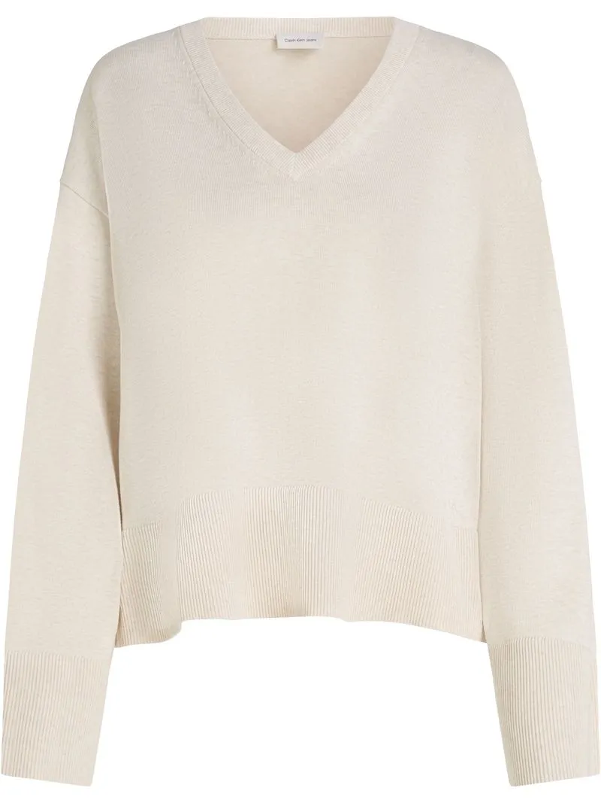
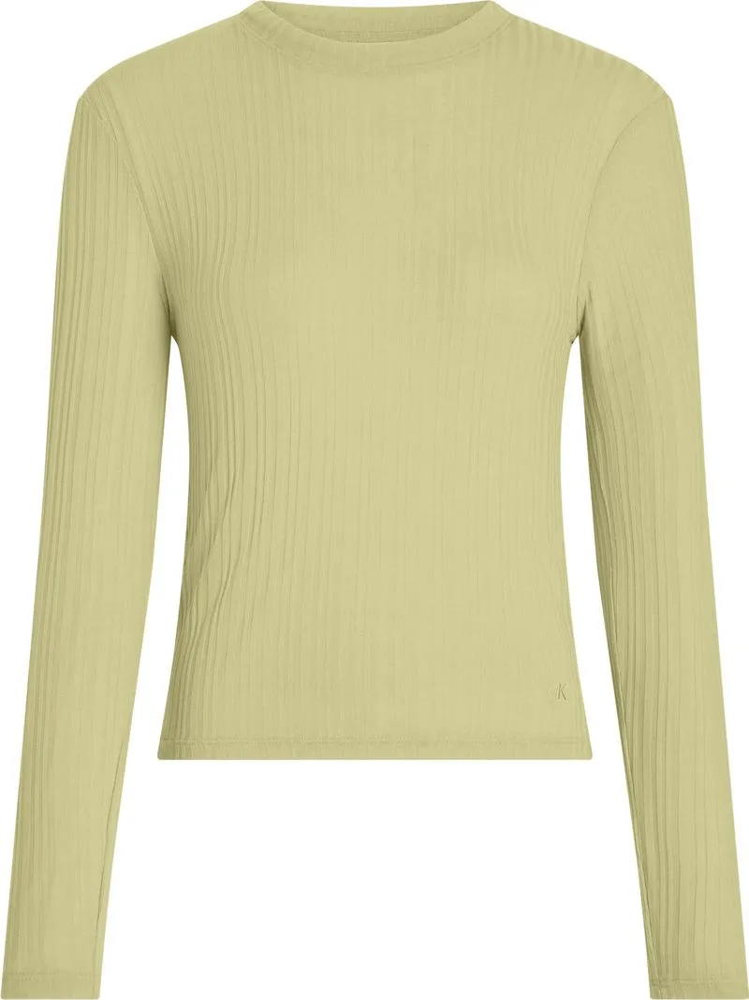
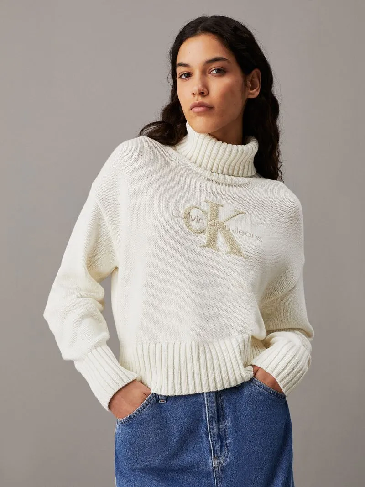
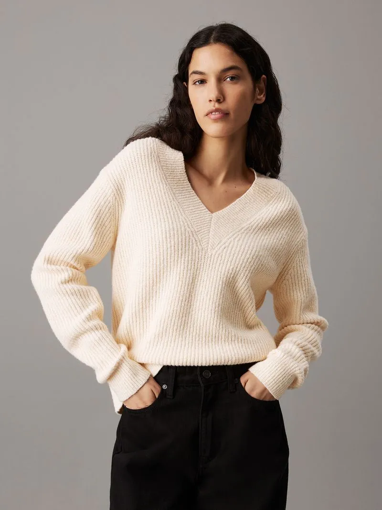

|

Q560.00Descripción del producto Suéter con escote en v |

Q364.00Descripción del producto Camiseta de manga larga de canalé semitransparente |
|

Q700.00Descripción del producto Suéter de cuello alto con monograma |

Q1,000.00Descripción del producto Suéter de pico de buclé de canalé |